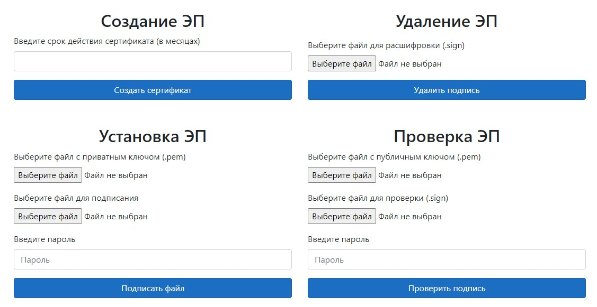
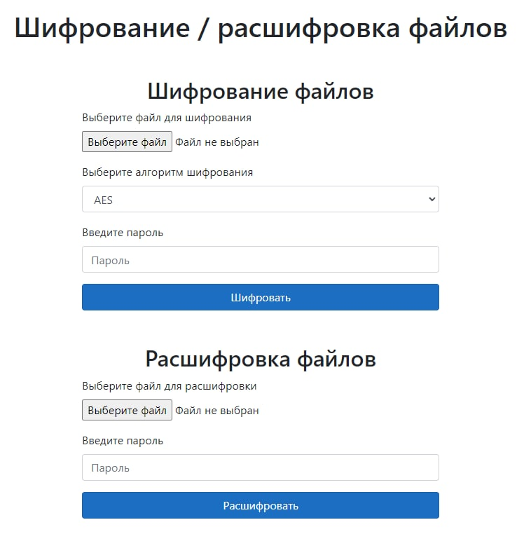
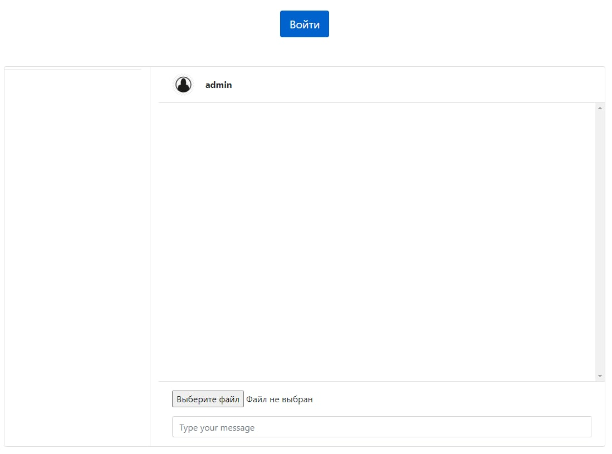
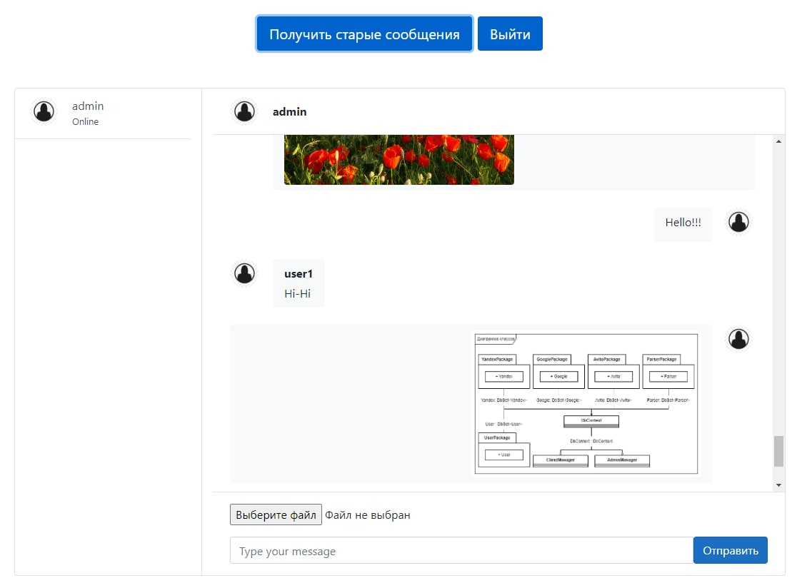

ЭЦП
Электронная подпись (ранее ЭП) — собственноручная подпись в электронном виде, которой можно подписывать документы. Федеральный закон №63 ФЗ от 06.04.2011 определил три вида электронных подписей: простую, неквалифицированную и квалифицированную. У них разный уровень защиты и юридической значимости, так что применяются они в разных ситуациях.
Электронная подпись предназначена для защиты электронного документа, передаваемого посредством различных сред или хранящегося в цифровом виде, от подделки и является атрибутом электронного документа. Она получается в результате криптографического преобразования информации с использованием закрытого ключа электронной цифровой подписи и позволяет идентифицировать владельца сертификата ключа подписи, установить отсутствие искажения информации в электронном документе.
Актуальность электронной подписи с течением времени набирает большие обороты, т.к. ее использование имеет широкие перспективы внедрения во всех сферах жизни современного общества, связанных с передачей и обработкой информации. С помощью электронной подписи можно воспользоваться государственными услугами самых разных ведомств не выходя из дома. Документ, поданный в режиме онлайн и подписанный данной подписью, имеет такую же юридическую силу, как и бумажный, который подписан собственноручно. Электронная подпись надежно защищена от подделок и действительна на всей территории страны.
- Электронный документ, подписанный электронной подписью, сертификат ключа проверки которой выдан в период действия федерального закона № 1-ФЗ, признаётся подписанным квалифицированной электронной подписью.
- Для создания Электронной подписи пользователю необходимо указать срок действия (в месяцах) сертификата, полученного в удостоверяющем центре. Чтобы установить Электронную подпись, пользователю нужно загрузить файл с закрытым ключом, который доказывает его авторство. Применяется приватный ключ самого распространённого расширения - *.pem. Вторым шагом пользователю следует загрузить файл, который необходимо подписать. И, после подтверждения действия паролем, запустить процедуру подписания файла. Сама процедура будет проведена автоматически. На выходе пользователь получит файл с Электронной подписью.
- Так же возможно удалить Электронную подпись. Файл SIGN формируется на выходе, после того, как к документу добавляется блок «ключ-подпись». Поэтому непосредственно для удаления подписи пользователю нужно загрузить файл с расширением (*.sign от “signature”-подпись), из которого будет производиться удаление подписи.
- Ещё одной функцией обозначена Проверка Электронной подписи. Она заключается в сверке открытого ключа с файлом, в котором установлена Электронная подпись. Производится проверка таким образом: Пользователь загружает файл (*.pem) с установленным публичным ключом. Затем загружает исходный файл (*.sign) для проверки соответствия. И после введения пароля, получает результат проверки.
- Суть асимметричного шифрования заключается в том, что используется пара ключей. Один из ключей называется открытым (как правило, он публикуется в самом сертификате владельца), а второй ключ называется приватным — он держится в тайне. Оба ключа используются в паре: открытый ключ используется для того, чтобы зашифровать данные, а приватный — для того, чтобы расшифровать их. Такая взаимосвязь позволяет делать две важные вещи.
- Любой пользователь может получить открытый ключ и использовать его для шифрования данных, расшифровать которые сможет только пользователь, владеющий приватным ключом.
- Если владелец ключевой пары "зашифрует" (подпишет) данные своим приватным ключом, то каждый сможет убедиться в том, что данные были отправлены именно владельцем приватного ключа и не были изменены третьей стороной. Именно это является основой цифровых подписей.

Шифрование
Проблема защиты информации путем ее преобразования, исключающего ее прочтение посторонним лицом, волновала человеческий ум с давних времен. История криптографии — ровесница истории человеческого языка. Более того, первоначально письменность сама по себе была криптографической системой, так как в древних обществах ею владели только избранные. Священные книги Древнего Египта, Древней Индии и других народов тому являются примером.
Информация в современном обществе – одна из самых ценных вещей в жизни, требующая защиты от несанкционированного проникновения лиц, не имеющих к ней доступа. В настоящий момент человечество стало значительно более зависимым от различных технологий, особенно в области онлайн-коммуникаций.
Криптографические методы защиты информации — это специальные методы шифрования, кодирования или иного преобразования информации, в результате которого ее содержание становится недоступным для посторонних лиц без предъявления ключа криптограммы и обратного преобразования. Шифрование данных помогает пользователям защитить информацию и их конфиденциальность во время передачи данных или при хранении на устройстве. Шифрование - это процесс кодирования информации с целью предотвращения несанкционированного доступа к ней. В случае кражи или утечки данных пользователи будут уверены, что зашифрованные данные будут недоступны для прочтения без соответствующего ключа.
Криптографический метод защиты, один из самых надежных методов защиты, так как охраняется непосредственно сама информация, а не доступ к ней (например, зашифрованный файл нельзя прочесть даже в случае кражи носителя). Данный метод защиты информации реализуется в виде программ или пакетов программ.
Для защиты файлов используется на выбор пользователя один из алгоритмов шифрования AES - популярный и надежный симметричный
блочный шифр или DES - его проверенный временем предшественник. Пользователь загружает файл для шифрования и вводит пароль, который
используется для создания ключа шифрования, после чего запускается процедура и на выходе получается зашифрованый файл.
Также доступна функция расшифровки файлов - пользователь загружает зашифрованный файл, вводит пароль, установленный при шифровании
и ожидает расшифровки файла. Подбирать пароль для несанкционированного доступа к зашифрованному файлу не имеет смысла - ключ шифрования
создается с использованием пароля, поэтому злоумышленники получат неверно расшифрованный файл с полным отсутствием информативности.
Короткие атаки также будут безуспешны. Они подразумевают до шести раундов, в то время как используемые алгоритмы реализуют 10 - 12 раундов.
Для удобства пользователя все необходимые действия прописаны, разработан простой и удобный интерфейс. Никакие дополнительные знания
не требуются. Функции шифрования/расшифровки готовы к использованию и работают для обеспечения безопасности Ваших данных.

Мессенджер
В эпоху бурного развития информационных технологий компьютер, сотовый телефон,
смартфон воспринимается как неотъемлемая часть нашей жизни.
Большинство современных людей не представляют себе без него ни учебу,
ни досуг и часами просиживают один на один со светящимся экраном.
В настоящее время в мире существует довольно много средств, форм и способов общения, в частности используют мессенджеры, где люди общаются, делятся какой-либо информацией, знакомятся. Следует заметить, что платформа мгновенных сообщений развивается довольно стремительно, превращаясь из большой игрушки для отдельных интеллектуалов в источник всевозможной полезной информации для всех, а также становится основной формой виртуального общения. Мессенджеры могут использоваться не только в повседневной жизни, но и в профессиональной деятельности. В условиях необходимости быстро предать информацию, задать вопрос и получить на него ответ, мессенджеры становятся крайне необходимы.
В настоящее время в мире существует довольно много средств, форм и способов общения, в частности используют мессенджеры, где люди общаются, делятся какой-либо информацией, знакомятся. Следует заметить, что платформа мгновенных сообщений развивается довольно стремительно, превращаясь из большой игрушки для отдельных интеллектуалов в источник всевозможной полезной информации для всех, а также становится основной формой виртуального общения. Мессенджеры могут использоваться не только в повседневной жизни, но и в профессиональной деятельности. В условиях необходимости быстро предать информацию, задать вопрос и получить на него ответ, мессенджеры становятся крайне необходимы.
В рамках проекта создан онлайн-чат между зарегистрированными пользователями,
где может происходить обмен сообщениями, файлами или изображениями.
Для того, чтобы воспользоваться всеми функциями мессенджера необходимо нажать на кнопку "Войти"
и пройти авторизацию.
В случае успешного входа в аккаунт Вы можете написать любому пользователю. Для отправки текстового сообщения необходимо нажать на кнопку "Отправить", если необходимо прикрепить документ или изображение, то предварительно нажимается кнопка "Выбрать файл", которая позволяет прикрепить файл к Вашему сообщению. Статус пользователя отражается под его аватаром, это "Online" или "Offline". В диалоге можно воспользоваться функцией "Получить старые сообщения". Выход из онлайн-чата осуществляется посредством нажатия на кнопку "Выход".
В случае успешного входа в аккаунт Вы можете написать любому пользователю. Для отправки текстового сообщения необходимо нажать на кнопку "Отправить", если необходимо прикрепить документ или изображение, то предварительно нажимается кнопка "Выбрать файл", которая позволяет прикрепить файл к Вашему сообщению. Статус пользователя отражается под его аватаром, это "Online" или "Offline". В диалоге можно воспользоваться функцией "Получить старые сообщения". Выход из онлайн-чата осуществляется посредством нажатия на кнопку "Выход".

